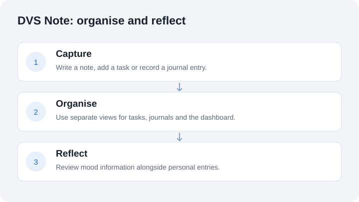

Salem Elatrash / DVS Note
DVS Note
An academic productivity and reflection project built at TU Dublin by Salem Elatrash, Daniel Aigbe and Adefolajuwon Adeniran.
The idea
Keep everyday planning and personal reflection in one application. Notes and tasks support organisation, while journals and mood views provide space to look back on the day.

What the team built
The archived repository contains dashboard, to-do, journal and login pages, plus API routes for account access, task operations, journal entries and mood statistics. The repository also contains mobile-related project work.
Technology
React and Next.js for the web application, Material UI for interface components and MongoDB connections in the account routes. Expo and Capacitor appear in the project's mobile tooling. These are repository observations, not a claim that every target has been rebuilt successfully today.
My contribution
I was one of the three student developers. This overview credits the application to the team. A precise feature-by-feature attribution has not been verified, so it does not assign the whole application or specific teammates' work to me.
Status and lessons
The repository is an archived academic record. It demonstrates team development across multiple application areas, and the need to document the actual project structure. It is not a current hosted product or a clinical wellbeing tool.
View the academic archive ↗